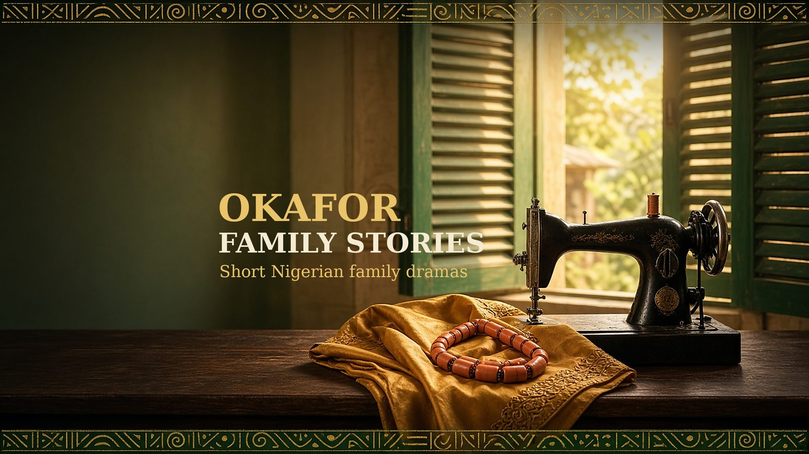

Short Nigerian family dramas
Start with “Papa’s Machine” Free Family Conversation GuideA daughter comes home to Enugu and finds her mother selling her late father’s sewing machine. She is hurt and certain she understands why. The truth, when it arrives, is quieter and kinder than she imagined.
A short story you can watch in a few minutes, with English dialogue, a little Igbo, and captions for watching on mute.
“Papa’s Machine” premieres soon on YouTube.
Subscribe to Okafor Family Stories so you see it first.
Okafor Family Stories brings you short, original Nigerian family dramas: mothers and daughters, quiet sacrifices, wedding preparations, and the objects that hold a family together.
Each story is set in contemporary Nigeria, with English dialogue, a little Igbo and Pidgin, and captions you can follow on mute. New stories will arrive on a steady schedule, so subscribe on YouTube so you do not miss the next chapter.
Two pages to help families, church groups and writers talk about what “Papa’s Machine” stirs up: a short synopsis, eight discussion questions about sacrifice, communication, igba nkwu traditions, money and honesty between generations, and a gentle “try this at home” exercise.
Free to print and share. It contains spoilers, so watch the story first.
Family Conversation Guide · 2 pages · PDF
The best way to help right now is to watch, share and subscribe. A way to support the channel directly may be added later.
Grab the free Family Conversation Guide above, and share the story with someone who would love it.
All stories on this channel are fictional. Characters, voices and scenes are created with AI video tools, and any resemblance to real people is coincidental. Videos carry YouTube’s altered or synthetic content disclosure where it applies.
Business and collaboration enquiries: pnsgloballlc@gmail.com